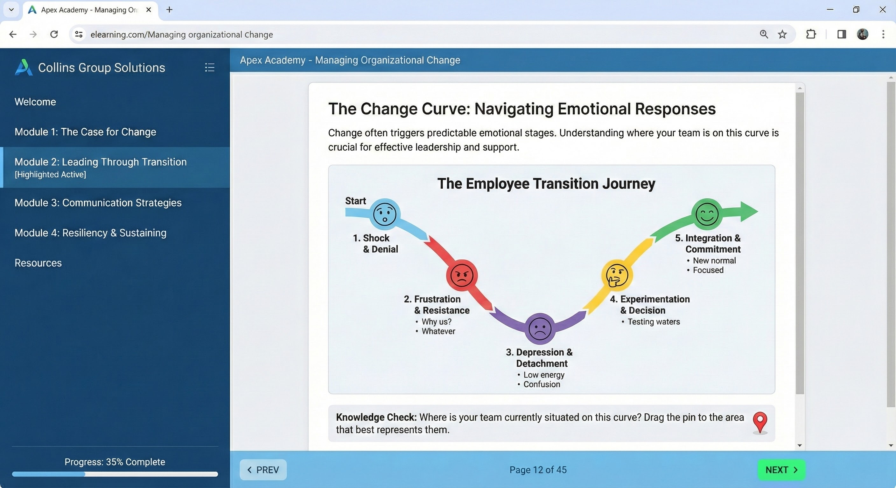

Training & Development
Evidence-based learning solutions that improve performance and meet organizational objectives.
Instructional Design
We don't just "train"; we design learning experiences using the ADDIE framework and Adult Learning Principles to ensure skills transfer to the job.
- Instructional Design (ADDIE)
- eLearning Development (Articulate/Captivate)
- Training Program Evaluation & Improvement
- Blended Learning Strategies


Leadership & Facilitation
Developing strong leaders through the knowledge of self and others. Our facilitation encourages active learning and engagement.
- Leadership Training & Development
- Talent Development
- Facilitation (Virtual & In-person)
- Strategic Thinking Workshops